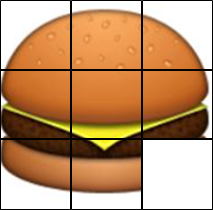

Le taquin est un jeu solitaire en forme de damier créé vers 1870 aux États-Unis. Sa théorie mathématique a été publiée par
l'American Journal of mathematics pure and applied en 1879. En 1891, son invention fut revendiquée par
Sam Loyd, au moment où le jeu connaissait un engouement considérable, tant aux États-Unis qu'en Europe. Il est composé de 15 petits carreaux numérotés de 1 à 15 qui glissent dans un cadre prévu pour 16. Il consiste à remettre dans l'ordre les 15 carreaux à partir d'une configuration initiale quelconque.
Le principe a été étendu à toutes sortes d'autres jeux. La plupart sont à base de blocs rectangulaires plutôt que carrés, mais le but est toujours de disposer les blocs d'une façon déterminée par un nombre minimal de mouvements.
Source : Wikipédia
Pour notre projet, nous partons sur une variante du taquin : une image découpée en une grille carrée de côté 3. Les cases seront mélangées, et le joueur devra reconstituer l'image.
Jouer au jeu.
